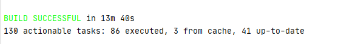
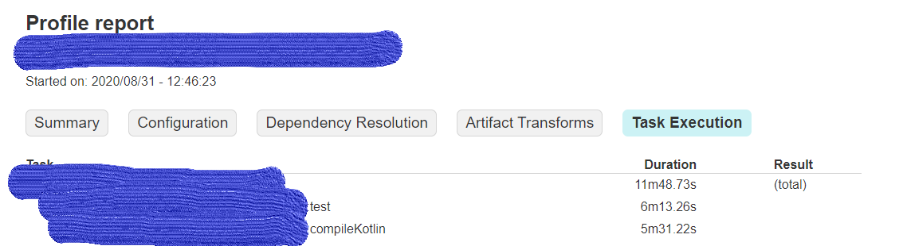
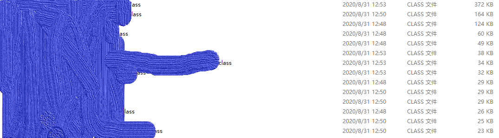

谈谈我如何提高项目的10倍构建速度。
背景
构建速度对于开发效率的影响非常大。对于常规开发流程而言，至少经历三个阶段。
- 本地构建
- 分支合并前构建
- 分支合并后构建

上面是我们项目的一次构建时间。最理想情况下每次构建只跑一次，都需要40多分钟。在实际开发中，为了修复一个简单的bug， 可能就要花费一两个小时用于构建。可见提高构建时间都与提高开发效率的重要性。
性能分析
解决问题的第一步是找到问题。性能优化的第一步是性能分析。最重要的是找到问题的所在。
我们项目是Kotlin编写的。Gradle是构建工具。Gradle 自身提供了几个性能分析工具
- gradle –scan
- gradle –profile
- gradle –info/–debug
gradle --scan 会生成一个构建报告并发往Gradle的服务器，包含各种构建信息，当然也包括构建性能分析。
如果只关注构建性能，可以用gradle --profile生成本地报告，查看各个任务的执行时间。
gradle --info/--debug 查看gradle的构建日志。可以了解我们的构建任务在做什么样的事情。

查看构建结果发现有一半的时间花费在test上，那么我们在本地开发的过程中可以用gradle build -x test跳过test.
Gradle 优化参数
Gradle自身有一些优化手段。
Gradle启动后默认在后台维护一个守护进程。当下一次重新构建的时候。直接时候守护进程而不用重新启动。好处是减少了重新加载数据和代码的时间。
Gradle 还可以配置并行构建，修改jvm参数,设置cache等优化手段。
cache按顺序分为3种，
- up-to-date check.
- local cache.
- remote cache.
up-to-date check会检查当前工作区的输入和输出，如果输入（一般是source code）和输出（一般是artifact）都没有改变的话，就认为构建的最新的，不需要重新编译。
local cache 则是在本地的cache仓库。存储曾经的构件。如果Gradle task的输入跟之前的一样，则可以从cache中获得同样的输出。这个跟up-to-date check的区别是up-to-date check只是跟上一次的比较。
remote cache 则是远程cache仓库。在一个组里，不同成员可能都需要相同的构建结果。remote cache能避免不同成员的相同构建。
仅就编译任务而已，Gradle还有incremental compilation和Compile avoidance。
incremental compilation指每次编译只编译改变的文件和依赖于改变的文件的文件。
Compile avoidance指一个class文件对外的接口没有改变，而只是实现改变了，那么只需要重新构建当前class文件而无需重新构建其他文件。
虽然Gradle本身提供了丰富的工具用于优化构建速度。但在我们的项目里，这些工具都已经使用到了。所以实际的瓶颈并不在这里。
优化Kotlin编译速度
在之前的性能分许当中，另外一个瓶颈是Kotlin的编译速度。为什么编译速度这么慢？是哪些代码影响了编译速度呢？
不幸的是，Gradle的性能分析只能提供任务的执行时间，不能够细致到具体文件的编译时间。那么怎么找到影响编译速度的代码呢？
一个简单的想法是编译速度慢的文件编译出来的class文件也越大。基于这个简单的想法，直接把所有class文件按大小排序即可。

可以看到最大的文件有372kb.这个很可能就是瓶颈。怎么证明？
之前我介绍过Compile avoidance.我们可以借助Gradle的这个特性证明我们的判断。只要在具体的方法里加入一个从不使用的变量，再重新编译。那么就能保证Gradle只编译当前文件而不影响其他文件。实际的结果也证明只有修改过的文件重新编译了。这可以从class文件的最新修改时间看出来。
编译的时间花费了大约4分多钟，占据了大部分的编译时间。瓶颈找到了！
那个文件的工作大概是将我们的domain object转化成entity object. 大概就业务对象转换成数据库保存用的对象。
里面有很大一部分对象的转换已经在别的文件中实现过了。而且我发现里面还有不少转化还是旧的代码，缺少了一些新的字段。根据DRY原则，直接把别的文件中的转化类import进来替代就好了。
这样修改过后，代码从800多行减少到了300多行。编译时间减少了2分钟，class文件大小减少了160kb.
优化已经少有成果了，但即便如此，300多行的文件编译了两分钟还是有问题的。那问题又是什么呢？
我想到的另外的方法是反编译。将字节码反编译成Java代码。这样或许能看出Kotlin编译器的一些问题。
果不其然！
1 | objectConstrcurtor( |
在代码里，有大量类似的构造函数。每个构造函数的参数大多是带作用域函数(let, apply, run, also)的表达式。
这种带作用域函数在构造函数里编译出来的结果大概是这样子的。
1 | var34 = var10004; |
var35 = some expression;是实际的求得构造函数参数的表达式。前面的var34, var33之类的表达式从表现形式上看应该是压栈和出栈的过程。并且从变量名和数量上看，每个带作用域函数的表达式都需要把前面每一个表达式对应的变量压栈再出栈。
这意味着我第100个参数的表达式要压99次栈。也就意味着这个压栈出栈的操作数跟参数的平方成正比。而不行的是，我们业务对象成员变量非常的多，超过100个。也意味着这些压栈出栈的操作数是以万为单位的。这也是我们的class文件为什么这么大，编译时间为什么这么长的原因。
找到了问题，修改起来就容易多了。这是Kotlin编译器的问题。一个简单的想法是Kotlin对于简单结构的语句不会做出如此复杂的操作。所以我将所有带作用域的表达式从构造函数里面提出来。再以单个变量的形式写入表达式中。如下所示：
1 | val newA = a.let{...} |
重新编译发现class文件减少到了88kb.总编译时间从331s减少到了36s.差不多减少到了1/10.